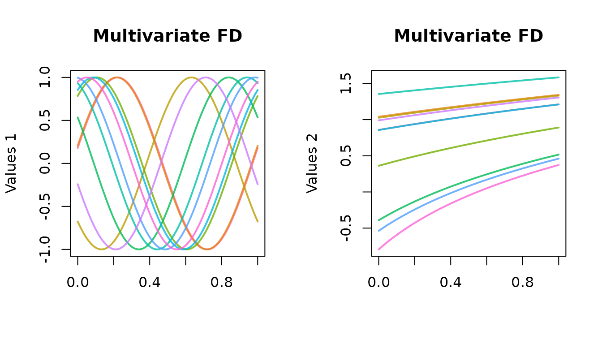
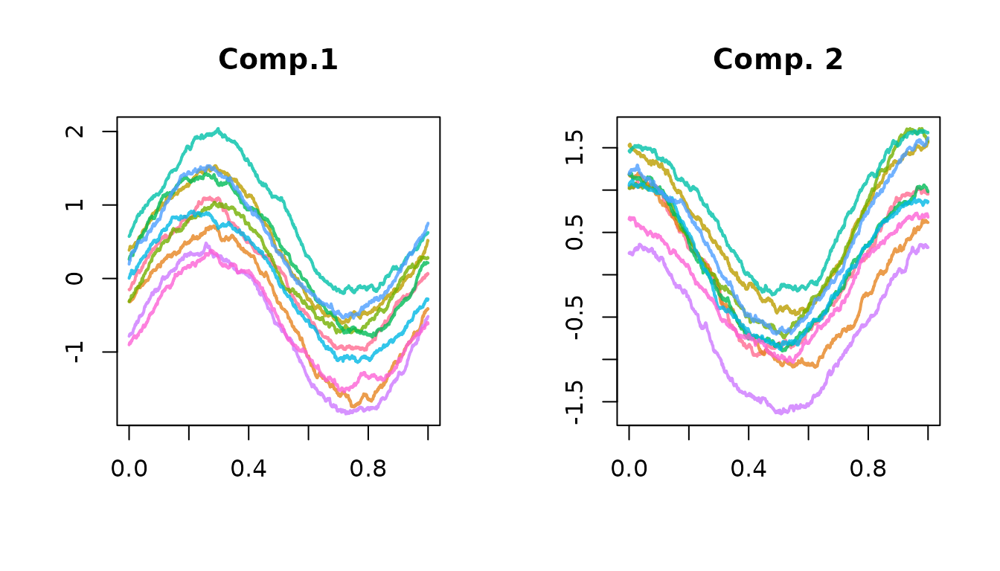

Introduction
Package roahd (RObust Analysis of High dimensional Data) is an R package meant to gather recently proposed statistical methods to deal with the robust analysis of functional data (Francesca Ieva et al. 2019).
The package contains an implementation of quantitative methods, based on functional depths and indices, on top of which are built some graphical methods (functional boxplot and outliergram) useful to carry out an explorative analysis of a functional dataset and to robustify it by discarding shape and magnitude outliers.
Both univariate and multivariate functional data are supported in the package, whose functions have been implemented with a particular emphasis on computational efficiency, in order to allow the processing of high-dimensional dataset.
Representation of functional data
The package has been designed to work with a representation of functional data through dedicated, simple and handy S3 classes, namely fData for univariate functional data and mfData for multivariate functional data.
The use of S3 classes is exploited by suitable S3 methods implementing the statistical features of the package, that are able to dispatch the correct method call depending on the class of their functional data argument.
fData
S3 class fData implements a representation of univariate functional datasets. They are obtained once specifying, for each observation in the functional dataset, a set of measurements over a discrete grid, representing the dependent variable indexing the functional dataset (e.g. time).
In other words, if we denote by \(T = [t_0, t_1, \ldots, t_{P-1}]\) an evenly spaced grid (\(t_i - t_{i-1} = h > 0\)), and imagine to deal with a dataset \(D_{i,j} = X_i(t_j)\), \(\forall i = 1, \ldots, N\) and \(\forall j=0, \ldots, P-1\), the object fData is built starting from the grid and the values in the following way:
library( roahd )
# The number of observations in the functional dataset.
N = 5
# The number of points in the 1D grid where the functional data are measured.
P = 1e2
# The previous two variable names are used consistently throughout the tutorial
# and the package's documentation to indicate the number of observations and the
# grid size.
# The grid over which the functional dataset is defined
grid = seq( 0, 1, length.out = P )
# Creating the values of the functional dataset
Data = matrix( c( sin( 2 * pi * grid ),
cos( 2 * pi * grid ),
4 * grid * ( 1 - grid ),
tan( grid ),
log( grid ) ),
nrow = N, ncol = P, byrow = TRUE )
# Building an fData object
# The constructor takes a grid and a matrix-like structure for data values
# (see help for more details on how to use the constructor)
fD = fData( grid, Data )
# Inspecting the structure of an fData object
str( fD )## List of 6
## $ t0 : num 0
## $ tP : num 1
## $ h : num 0.0101
## $ P : int 100
## $ N : int 5
## $ values: num [1:5, 1:100] 0 1 0 0 -Inf ...
## - attr(*, "class")= chr "fData"
plot( fD, main = 'Univariate FD', xlab = 'time [s]', ylab = 'values', lwd = 2 ) Thus, an object fData is a list containing: the fields t0, tP, defining the starting and end point of the one dimensional grid of the fData object, the constant step size h and the number of grid points P and the field values defining the measurements of the dataset over the one dimensional grid.
mfData
An mfData object, instead, implements a multivariate functional dataset, i.e. a collection of functions having more than one components, each one depending on the same variable. In practice, we deal with a discrete grid \([t_0, t_1, \ldots, t_{P-1}]\) and a dataset of \(N\) elements, each one having \(L\) components observed over the same discrete grid: \(D_{i,j,k} = X_{i,k}(t_{j})\), \(\forall i = 1, \ldots, N\), \(\forall j = 0, \ldots, P - 1\) and \(\forall k = 1, \ldots, L\).
# Creating some values for first component of the dataset
Data_1 = t( sapply( runif( 10, 0, 4 ),
function( phase ) sin( 2 * pi * grid + phase ) ) )
# Creating some values of functions for
Data_2 = t( sapply( runif( 10, 0, 4 ),
function( phase ) log( grid + phase ) ) )
# Building an fData object
# The constructor takes a grid and a list of matrix-like structures for data values,
# each one representing the data values of a single component of the dataset
# (i.e. D_{,,k}, k = 1, ... L ).
# (see help for more details on how to use the constructor)
mfD = mfData( grid, list( Data_1, Data_2 ) )
str( mfD )## List of 6
## $ N : int 10
## $ L : int 2
## $ P : int 100
## $ t0 : num 0
## $ tP : num 1
## $ fDList:List of 2
## ..$ :List of 6
## .. ..$ t0 : num 0
## .. ..$ tP : num 1
## .. ..$ h : num 0.0101
## .. ..$ P : int 100
## .. ..$ N : int 10
## .. ..$ values: num [1:10, 1:100] 0.18 0.206 -0.676 0.784 0.534 ...
## .. ..- attr(*, "class")= chr "fData"
## ..$ :List of 6
## .. ..$ t0 : num 0
## .. ..$ tP : num 1
## .. ..$ h : num 0.0101
## .. ..$ P : int 100
## .. ..$ N : int 10
## .. ..$ values: num [1:10, 1:100] 0.858 1.04 1.026 0.362 -0.392 ...
## .. ..- attr(*, "class")= chr "fData"
## - attr(*, "class")= chr "mfData"
# Each component of the mfData object is an fData object
sapply( mfD$fDList, class )## [1] "fData" "fData"
The fact that mfData components are fData objects is indeed conceptually very natural, but also allows for a seamless application of S3 methods meant for fData on multivariate functional data components, making the exploration and manipulation of multivariate datasets rather easy:
plot( mfD$fDList[[ 1 ]], main = 'First component',
xlab = 'time', ylab = 'Values', lwd = 2 )Moreover, mfData objects can be obtained also from a set of homogeneous fData objects, i.e. of equal sample size and defined on the same grid:
Subsetting fData
fData objects can be subset using a suitably overloaded operator [.fData, that allows for the use of standard slices of matrix and array classes also for fData.
# Subsetting fData and returning result in matrix form
fD[ 1 , 1, as_fData = FALSE ]
fD[ 1, , as_fData = FALSE ]
fD[ 2, 10 : 20, as_fData = FALSE ]
fD[ , 10, as_fData = FALSE ]
# As default behavior the subset is returned in fData form
oldpar <- par(mfrow = c(1, 1))
par(mfrow = c(1, 2))
plot(fD, main = "Original dataset", lwd = 2)
plot(fD[, 1:20], main = "Zooming in", lwd = 2)
par(oldpar)Algebra
An algebra of fData objects is also implemented, making it easy to sum, subtract, multiply and divide these objects by meaningful and compliant structures.
Sums and subtractions, available through + and - operators (see help at +-.fData), allow to sum an fData on the left hand side and a compliant structure on the right hand side. This can be either another fData of the same sample size and defined over the same grid, or a 1D/2D data structure with a number of columns equal fData’s grid length (i.e. P), and number of rows equal to fData’s sample size (i.e. N) or equal to one (in this case the only observation available is recycled N times). The operations are then performed element-wise between the lhs and rhs.
Multiplication and division, instead, is implemented only for an fData left hand side and a numeric variable or numeric vector right hand side. In the first case, each function in the functional dataset is multiplied/divided by the specified quantity; in the second case, specifying a vector of length N, the multiplication/division of each functional observation is carried out by the corresponding quantity in the vector, in an element-wise way:
fD * 2
fD / 3
fD * ( 1 : N )
fD / ( 1 : N )Visualization
fData and mfData objects can be visualized thanks to specific S3 plotting methods, plot.fData and plot.mfData.
The graphical parameters of these functions have been suitably customized in order to enhance the visualization of functions. In particular, elements are plotted by default with continuous lines and an ad-hoc palette that helps differentiating them. As default x- and y-axis labels, as well as titles, are dropped so that plot’s arguments calls are not displayed when no value is provided.
In case of mfData the graphical window is split into a rectangular lattice to plot single dimensions. The rectangular frame has floor( sqrt( L ) ) rows and ceiling( x$L / floor( sqrt( x$L ) ) ) columns. If custom labels/titles are desired, they must be provided in the following way: since the grid is the same for all the dimensions, just one string is expected for x-axis (e.g. xlab = 'grid'), while either a single string or a list of L strings (one for each dimension) is expected for both the y-axis label(s) and title(s). In case just one string is passed to plot.mfData, the same value is used for all the dimensions.
Statistics
Depths
roahd provides a number of depth definitions, that are exploited by the visualization functions but can also be used by themselves. These are based on the notion of Band Depth (López-Pintado and Romo 2007, 2009).
Band Depth and Modified Band Depth are implemented in the functions BD and MBD. Both of them can work with either an fData object, specifying the univariate functional dataset whose depths must be computed, or a matrix of data values (e.g. in the form of fData$values output). MBD can be called with the additional parameters manage_ties (defaulting to FALSE), specifying whether a check for the presence of tied data must be made prior to computing depths, and therefore a suitable computing strategy must be used. The implementation of MBD exploits the recommendations of (Sun, Genton, and Nychka 2012), but extends them in order to accommodate for the possible presence of ties.
BD( fD )
BD( fD$values )
MBD( fD )
MBD( fD$values )
MBD( fD, manage_ties = TRUE )
MBD( fD$values, manage_ties = TRUE )Another definition available is the Half Region Depth (along with its modified version), that is built on top of the Epigraph and Hypograph indexes (see López-Pintado and Romo 2011):
A generalization of MBD to multivariate functional data, implementing the ideas of F. Ieva and Paganoni (2013), is also available through the functions multiBD and multiMBD. These functions accept either a mfData object, specifying the multivariate functional dataset whose depths have to be computed, or a list of matrices of data values (see example below).
The function computes the BD or MBD for each component of the multivariate functional dataset and then averages them according to a set of weights. These can be specified in two ways: either with the flag uniform, that is turned into rep( 1/L, L ) (where L stands for the number of components in the multivariate dataset), or by providing the actual set of weights to be used. The latter option allows to use ad-hoc set of weights, like in (Tarabelloni et al. 2015).
multiBD( mfD, weights = 'uniform' )
multiMBD( mfD, weights = 'uniform', manage_ties = FALSE )
multiBD( mfD, weights = c( 0.6, 0.4) )
multiMBD( mfD, weights = c( 0.7, 0.3 ), manage_ties = FALSE )
multiBD( list( fD_1$values, fD_2$values ), weights = c( 0.6, 0.4) )
multiMBD( list( fD_1$values, fD_2$values ), weights = c( 0.7, 0.3 ), manage_ties = FALSE )Mean and median
Suitable S3 extensions to the functions for the computation of mean function and median of functional datasets are also present.
The sample mean of a functional dataset coincides with the cross-sectional mean function, i.e. the function obtained by computing the mean across the whole dataset point-by-point along the grid where functional data are defined:
\[ \widehat{\mu}( t_j ) = \dfrac{1}{N} \sum_{i=1}^{N} X_i(t_j), \qquad \forall j = 0, \ldots, P-1 \]
for a univariate functional dataset, while in the multivariate case is:
\[ \widehat{\mu}_k(t_j) = \dfrac{1}{N} \sum_{i=1}^{N} X_{i,k}(t_j), \qquad \forall j = 0, \ldots, P-1, \qquad \forall k = 1, \ldots, L. \]
The sample median of a functional dataset, instead, is defined as the element of the functional dataset fulfilling the maximum depths, given a certain definition of depth. For instance, for MBD:
\[ \widehat{m}( t_j ) = \left(\text{arg}\max_{i=1, \ldots, N} MBD( X_i )\right)( t_j), \qquad j = 0, \ldots, P-1. \]
The sample mean is implemented in the S3 methods mean.fData( x, ... ) and mean.mfData( x, ... ), that can be invoked directly on fData and mfData objects. These methods can be called directly without the .fData or .mfData suffix, due to their S3 nature and call, that allows them to be dispatched from the standard mean function. The sample median, instead, is implemented in the functions median_fData( fData, type = 'MBD', ... ) and median_mfData( mfData, type = 'multiMBD', ... ). Here, the type flag can take any name of functions (available in the caller’s environment) that can be used to compute the depths defining the sample median, taking respectively a 2D matrix of data values and a list of 2D matrix of data values as argument (plus, optionally, the dots arguments).
# Exploiting the S3 nature of these functions and the dispatching from the
# standard `mean` function
mean( fD )
mean( mfD)
median_fData( fD, type = 'MBD' )
median_fData( fD, type = 'MHRD' )
oldpar <- par(mfrow = c(1, 1))
par(mfrow = c(1, 2))
plot(fD, main = "Mean", lwd = 2)
plot(mean(fD), add = TRUE, lwd = 2, col = "black", lty = 2)
plot(fD, main = "Median", lwd = 2)
plot(median_fData(fD, type = "MBD"), add = TRUE, lwd = 2, lty = 2, col = "black")
par(oldpar)Covariance and cross-covariance functions
The computation of covariance functions and cross-covariance functions for univariate and multivariate functional datasets is provided through the function cov_fun( X, Y = NULL ).
Given a univariate functional dataset, \(X_1, X_2, \ldots, X_N\), defined over the grid \([t_0, t_1, \ldots, t_P] \subset I\), its covariance function (evaluated over the grid) is \(C(t_i,t_j) = Cov(X(t_i),X(t_j))\) for \(i,j=1,\ldots,P\). Given another univariate functional dataset \(Y_1, Y_2, \ldots, Y_N\), the cross-covariance function is \(C_{X,Y}(t_i,t_j) = Cov(X(t_i),Y(t_j))\).
Given a multivariate functional dataset with observations of \(L\) components, \(X_1, X_2,\ldots, X_N\), the covariance function has the following block structure: \(C^{k,l} = [ Cov(X_k(t_i),X_l(t_j))]_{i,j=1}^{P}\), for \(k,l = 1, \ldots, L\). Of course, it is \(C^{k,l} = [C^{l,k}]^T\). Analogously, the cross-covariance between two multivariate datasets is given by the cross covariances of the components.
When X is a univariate functional dataset, and if Y is NULL, cov_fun returns the sample covariance function of the functional dataset, defined over the tensorized grid where X is defined. If Y is a univariate functional dataset (in form of fData object), the method returns the cross-covariance function of X and Y.
When X is a multivariate dataset, Y can be NULL, an fData or a mfData object. In the first case the method returns the covariance function of X, in form of a list of only the upper-triangular blocks. The blocks are sorted in the list by row, therefore the first is the covariance of the first component, then the cross-covariance of the first component with the second, etc. In the second case, the method returns the list of cross-covariances between X’s components and Y. In the third case, the method returns the list of upper-triangular blocks of cross-covariances between X’s and Y’s components.
# Simple covariance function
C1 = cov_fun( fD )
# Cross-covariance function of first and second component of mfD
CC = cov_fun( mfD$fDList[[1]], mfD$fDList[[2]] )
# Block-covariance function of mfD
BC = cov_fun( mfD )Each covariance function estimate (the elements of the list in the multivariate case, too) is returned as an instance of the S3 class Cov, that stores the values of the covariance matrix as well as the grid parameters.
plot.Cov, an S3 specialization of plot is available as plotting method for Cov objects. It is built around graphics::image, hence all the additional parameters of image can be used to customize it.
plot( C1, main = 'Covariance function', xlab = 'time', ylab = 'time' )Indexes
roahd collects the implementation of some useful indexes that can be used to describe and summarize functional datasets.
EI and MEI implement the Epigraph Index and the Modified Epigraph Index, while HI and MHI implement the Hypograph Index and the Modified Hypograph Index (see López-Pintado and Romo 2011; Arribas-Gil and Romo 2014). These indexes can be used to sort data in a top-down and bottom-up fashion, and are used to define the HRD/MHRD and to build the outliergram.
These S3 methods can be called on univariate functional datasets, provided either in form of a fData object or a 2D matrix of values.
Correlation coefficients
When dealing with multivariate functional data, in particular in case of bivariate data, it is possible to compute correlation coefficients between data components that generalize the Kendall’s tau and Spearman’s coefficients (Valencia, Romo, and Lillo 2015a, 2015b).
The function cor_kendall( mfD, ordering = 'max' ) allows to compute the Kendall’s tau correlation coefficient between components of a bivariate dataset. The function accepts a mfData object and a criterion to perform the ordering of functional data (this ordering is used to determine the concordances and discordances between pairs in the definition of the coefficient).
Two criteria are available so far, that directly reflect those proposed in the reference paper: max, for the ordering between maxima of functions, and area, for the ordering between area-under-the-curve of functions.
N = 10
P = 1e3
grid = seq( 0, 1, length.out = P )
Data_1 = t( sapply( 1 : N, function( i )( sin( 2 * pi * grid ) + i ) ) )
# Monotone nonlinear transformation of data
Data_2 = Data_1^3
mfD = mfData( grid, list( Data_1, Data_2 ) )
plot( mfD, main = list( 'Comp. 1', 'Comp. 2') )
# Kendall correlation of monotonically dependent data is exactly 1
cor_kendall( mfD, ordering = 'max' )## [1] 1
cor_kendall( mfD, ordering = 'area' )## [1] 1The function cor_spearman( mfD, ordering = 'MEI', ... ) can be used to compute the Spearman correlation coefficient for a bivariate mfData object, tuning the ordering policy specified by ordering (defaulting to MEI) to rank univariate components and then compute the correlation coefficient. Besides MEI, also MHI can be used to rank univariate components.
# Spearman correlation of monotonically dependent data is exactly 1
cor_spearman( mfD, ordering = 'MEI' )
## [1] 1
cor_spearman( mfD, ordering = 'MHI' )
## [1] 1Simulation of functional data
roahd contains also some functions that can be used to simulate artificial data sets of functional data, both univariate and multivariate. These are used in the adjustment procedure of the outliergram and functional boxplot, but can also be used to help the development of new methodologies and help their testing.
Artificial univariate data are obtained simulating realizations of a gaussian process over a discrete grid with a specific covariance function and center (e.g. mean or median). Given a covariance function, \(C(s,t)\) and a centerline \(m(t)\), the model generating data is: \[X_i(t) = m(t) + \epsilon(t), \quad Cov(\epsilon(s),\epsilon(t)) = C(s,t), \quad i = 1, \ldots, N.\]
Univariate functional data
The function generate_gauss_fdata(N, centerline, Cov = NULL, CholCov = NULL) can be used to simulate a population of such gaussian functional data. The required arguments are: N the number of elements to be generated; centerline, the center of the distribution (mean or median); Cov, a matrix representation of the desired covariance function, intended as the measurements of such function over a tensor grid whose marginal must be the grid where the functional data will be defined (i.e. the argument grid in fData); CholCov the Cholesky factor of the discrete representation of the covariance function over the tensor grid (optional and alternative to the argument Cov). The inner procedure to generate the synthetic population of gaussian functional data makes use of the Cholesky factor of Cov, hence by providing its Cholesky factor, if already present in the caller’s scope, can save computing time.
A built-in function can be used to generate exponential-like covariance functions, namely exp_cov_function( grid, alpha, beta ), generating the discretized version of a covariance of the form \(C(s,t) = \alpha e^{-\beta | s - t | }\) over a lattice given by the tensorization of grid in grid.
A comprehensive example is the following:
N = 50
P = 1e3
grid = seq( 0, 1, length.out = P )
Cov = exp_cov_function( grid, alpha = 0.2, beta = 0.3 )
Data = generate_gauss_fdata( N, centerline = sin( 2 * pi * grid ), Cov = Cov )
fD = fData( grid, Data )
plot( fD, main = 'Gaussian fData', xlab = 'grid', lwd = 2)
Multivariate functional data
The function generate_gauss_mfdata( N, L, centerline, correlations, listCov = NULL, listCholCov = NULL) can be used to generate a gaussian dataset of multivariate functional data. The model generating data is the following:
\[ X_{i,k} = m_k(t) + \epsilon_k(t), \quad Cov(\epsilon_k(s),\epsilon_k(t))=C(s,t), \quad \forall i = 1, \ldots, N, \quad \forall k = 1, \ldots, L,\]
where \(Cor( \epsilon_j(t),\epsilon_l(t))=\rho_{j,l}\) specifies a (synchronous) correlation structure among the components of the functional dataset.
In order to use the function one should provide: N, the number of elements to simulate; L, the number of components of the multivariate functional data; centerline, a matrix containing (by rows) the centerline for each component; correlations, a vector of length 1/2 * L * ( L - 1 ), containing all the correlation coefficients among the components; either listCov or listCholCov, a list containing either the discretized covariance functions over the tensorized grid where functional data will be defined), or their Cholesky factor.
A comprehensive example is the following:
N = 10
P = 1e3
grid = seq( 0, 1, length.out = P )
Cov_1 = exp_cov_function( grid, alpha = 0.1, beta = 0.5 )
Cov_2 = exp_cov_function( grid, alpha = 0.5, beta = 0.1)
centerline = matrix( c( sin( 2 * pi * grid ),
cos( 2 * pi * grid ) ), nrow = 2, byrow = TRUE )
Data = generate_gauss_mfdata( N, 2, centerline, 0.8, list( Cov, Cov ) )
mfD = mfData( grid, Data )
plot( mfD, main = list( 'Comp.1', 'Comp. 2'), xlab = 'grid', lwd = 2)
Robustification
Functional boxplot
An implementation of the functional boxplot, through the S3 method fbplot, allows for the detection of amplitude outliers in univariate and multivariate functional datasets (see Sun and Genton 2011).
fbplot can be used to compute the set of indices of observations marking outlying signals. If used in graphical way (default behavior), it also plots the functional boxplot of the dataset under study
The functional boxplot is obtained by ranking functions from the center of the distribution outwards thanks to a depth definition, computing the region of 50% most central functions and inflating such region by a factor F. Any function crossing these boundaries is flagged as outlier. The default value for F is 1.5, otherwise it can be set with the argument Fvalue.
The argument Depths can take either the name of the function to call in order to compute the depths (default is MBD), or a vector containing the depth values for the provided dataset.
An example is:
set.seed(1618)
N = 1e2
P = 1e2
grid = seq( 0, 1, length.out = P )
Cov = exp_cov_function( grid, alpha = 0.2, beta = 0.3 )
Data = generate_gauss_fdata( N, sin( 2 * pi * grid ), Cov )
fD = fData( grid, Data )
Data = generate_gauss_mfdata( N, 2, matrix( sin( 2 * pi * grid ), nrow = 2, ncol = P, byrow = TRUE ), 0.6, listCov = list( Cov, Cov ) )
mfD = mfData( grid, Data )
fbplot( fD, main = 'Fbplot', Fvalue = 3.5 )The method fboplot.fData also allows to automatically compute the best adjustment factor F that yields a desired proportion of outliers (True Positive Rate, TPR) out of a Gaussian dataset with same center and covariance function as the fData object (see Sun and Genton 2012).
Such automatic tuning involves the simulation of a number N_trials of populations of Gaussian functional data with same center and covariance as the original dataset (the covariance is robustly estimated with robustbase::covOGK) of size trial_size, and the computation of N_trials values for Fvalue such that the desired proportion TPR of observations is flagged as outliers. The optimal value of Fvalue for the original population is then found as the average of the previously computed values Fvalue. The computation of the optimal Fvalue at each iteration of the procedure is carried out exploiting the zero-finding algorithm in stats::uniroot (Brent’s method).
The parameters to control the adjustment procedure can be passed through the argument adjust, whose default is FALSE and otherwise is a list with (some of) the fields:
-
N_trials: the number of repetitions of the adjustment procedure based on the simulation of a gaussian population of functional data, each one producing an adjusted value of F, which will lead to the averaged adjusted valueFvalue. Default is 20; -
trial_size: the number of elements in the gaussian population of functional data that will be simulated at each repetition of the adjustment procedure. Default is 8 *Data$N; -
TPR: the True Positive Rate of outliers, i.e. the proportion of observations in a dataset without amplitude outliers that have to be considered outliers. Default is2 * pnorm( 4 * qnorm( 0.25 ) ); -
F_min: the minimum value ofFvalue, defining the left boundary for the optimization problem aimed at finding, for a given dataset of simulated gaussian data associated to Data, the optimal value ofFvalue. Default is0.5; -
F_max: the maximum value ofFvalue, defining the right boundary for the optimization problem aimed at finding, for a given dataset of simulated gaussian data associated to Data, the optimal value ofFvalue. Default is5; -
tol: the tolerance to be used in the optimization problem aimed at finding, for a given dataset of simulated gaussian data associated to Data, the optimal value ofFvalue. Default is1e-3; -
maxiter: the maximum number of iterations to solve the optimization problem aimed at finding, for a given dataset of simulated gaussian data associated toData, the optimal value ofFvalue. Default is100; -
VERBOSE: a parameter controlling the verbosity of the adjustment process;
Suggestion: Try and select a sufficiently high value for adjust$trial_size, in fact too small values (the default is 8 * adjust$N) will result in the impossibility to carry out the optimization since the TPR percentage is too small compared to the sample size.
fbplot( fD, adjust = list( N_trials = 20, trial_size = N, TPR = 0.007, F_min = 0.1, F_max = 20 ), xlab = 'grid', ylab = 'values', main = 'Adjusted functional boxplot' )## $Depth
## [1] 0.38385859 0.49394343 0.34525657 0.42096162 0.13828283 0.35837576
## [7] 0.28715152 0.32094949 0.32032323 0.48111919 0.31599192 0.21463030
## [13] 0.50012525 0.42326869 0.48843232 0.20121616 0.50892929 0.47389091
## [19] 0.20728889 0.47252121 0.06370909 0.33557576 0.15535354 0.47672727
## [25] 0.47752323 0.42835152 0.46382222 0.22322020 0.47668687 0.35484848
## [31] 0.33292929 0.08008485 0.25306667 0.44199192 0.02651717 0.44075556
## [37] 0.47486869 0.15956768 0.29795556 0.29344242 0.29510303 0.16485657
## [43] 0.16455758 0.17609293 0.45211717 0.05358384 0.48465051 0.38964040
## [49] 0.21711515 0.33858990 0.19272727 0.47710707 0.34191515 0.40525657
## [55] 0.22770505 0.10705051 0.39230303 0.29587071 0.33210101 0.45514747
## [61] 0.49753939 0.49472727 0.44715152 0.36111515 0.33575354 0.22018586
## [67] 0.49524040 0.49006465 0.41932121 0.44806869 0.39192727 0.27018182
## [73] 0.48225051 0.46254141 0.27178182 0.40633131 0.40986263 0.09875152
## [79] 0.47945051 0.47055758 0.35553535 0.47608889 0.05703434 0.39505859
## [85] 0.18181010 0.12517172 0.43975758 0.30673535 0.47002020 0.44986263
## [91] 0.47310707 0.02000000 0.28471919 0.47399192 0.50324444 0.46288485
## [97] 0.38802424 0.36598788 0.41559596 0.49222626
##
## $Fvalue
## [1] 1.399858
##
## $ID_outliers
## [1] 46 92Outliergram
A method that can be used to detect shape outliers is the outliergram (see Arribas-Gil and Romo 2014), based on the computation of MBD and MEI of univariate functional data. Such pairs are compared to a limiting parabola, where they should be placed in case of non-crossing data, and outliers are then identified applying a thresholding rule.
The function outliergram displays the outliergram of a univariate functional dataset of class fData, and returns a vector of IDs indicating the shape outlying observations in the dataset.
set.seed( 1618 )
N = 100
P = 200
N_extra = 4
grid = seq( 0, 1, length.out = P )
Cov = exp_cov_function( grid, alpha = 0.2, beta = 0.5 )
Data = generate_gauss_fdata( N, sin( 4 * pi * grid ), Cov )
Data_extra = array( 0, dim = c( N_extra, P ) )
Data_extra[ 1, ] = generate_gauss_fdata( 1, sin( 4 * pi * grid + pi / 2 ), Cov )
Data_extra[ 2, ] = generate_gauss_fdata( 1, sin( 4 * pi * grid - pi / 2 ), Cov )
Data_extra[ 3, ] = generate_gauss_fdata( 1, sin( 4 * pi * grid + pi/ 3 ), Cov )
Data_extra[ 4, ] = generate_gauss_fdata( 1, sin( 4 * pi * grid - pi / 3), Cov )
fD = fData( grid, rbind( Data, Data_extra ) )
outliergram( fD, display = TRUE )## $Fvalue
## [1] 1.5
##
## $d
## [1] 0.0265397638 0.0420972694 0.0163513770 0.0111532440 0.0067863658
## [6] 0.0633575009 0.0304361417 0.0057970454 0.0227571882 0.0145653426
## [11] 0.0258463359 0.0060416309 0.0229304705 0.0184764330 0.0331577623
## [16] 0.0375485017 0.0080973441 0.0332893531 0.0049783374 0.0287247946
## [21] 0.0007439834 0.0179507842 0.0048674384 0.0205908094 0.0507057459
## [26] 0.0140847461 0.0598439087 0.0053677698 0.0091204957 0.0585340553
## [31] 0.0383932739 0.0004547423 0.0245676578 0.0225522778 0.0001640030
## [36] 0.0137137976 0.0249363284 0.0082996593 0.0171567914 0.0067567401
## [41] 0.0639066281 0.0024988611 0.0093970827 0.0181396378 0.0148128267
## [46] 0.0009838265 0.0250156413 0.0060619119 0.0059523478 0.0127617205
## [51] 0.0037292709 0.0344801904 0.0295149319 0.0203452903 0.0059721761
## [56] 0.2026008028 0.0077727362 0.0117117065 0.0247040282 0.0152389843
## [61] 0.0188668969 0.0209339012 0.0330268437 0.0180122479 0.0270653286
## [66] 0.0296787901 0.0298717513 0.0207407580 0.0166910941 0.0320567541
## [71] 0.0130978155 0.0144047610 0.0436259149 0.1107886436 0.0129862537
## [76] 0.0281796117 0.0295481283 0.0499512883 0.0360432972 0.0281692261
## [81] 0.0093940207 0.0328179798 0.0005894277 0.0103774459 0.0032465273
## [86] 0.0116910194 0.0229937220 0.0093602689 0.0059032114 0.0528054472
## [91] 0.0502566047 0.0002764003 0.0057026886 0.0281358476 0.0125306152
## [96] 0.0088838499 0.0331520538 0.0125406087 0.0514152353 0.0174583831
## [101] 0.3399725121 0.3680126774 0.2770713966 0.2794677698
##
## $ID_outliers
## [1] 56 74 101 102 103 104
outliergram( fD, Fvalue = 5, display = TRUE )## $Fvalue
## [1] 5
##
## $d
## [1] 0.0265397638 0.0420972694 0.0163513770 0.0111532440 0.0067863658
## [6] 0.0633575009 0.0304361417 0.0057970454 0.0227571882 0.0145653426
## [11] 0.0258463359 0.0060416309 0.0229304705 0.0184764330 0.0331577623
## [16] 0.0375485017 0.0080973441 0.0332893531 0.0049783374 0.0287247946
## [21] 0.0007439834 0.0179507842 0.0048674384 0.0205908094 0.0507057459
## [26] 0.0140847461 0.0598439087 0.0053677698 0.0091204957 0.0585340553
## [31] 0.0383932739 0.0004547423 0.0245676578 0.0225522778 0.0001640030
## [36] 0.0137137976 0.0249363284 0.0082996593 0.0171567914 0.0067567401
## [41] 0.0639066281 0.0024988611 0.0093970827 0.0181396378 0.0148128267
## [46] 0.0009838265 0.0250156413 0.0060619119 0.0059523478 0.0127617205
## [51] 0.0037292709 0.0344801904 0.0295149319 0.0203452903 0.0059721761
## [56] 0.2026008028 0.0077727362 0.0117117065 0.0247040282 0.0152389843
## [61] 0.0188668969 0.0209339012 0.0330268437 0.0180122479 0.0270653286
## [66] 0.0296787901 0.0298717513 0.0207407580 0.0166910941 0.0320567541
## [71] 0.0130978155 0.0144047610 0.0436259149 0.1107886436 0.0129862537
## [76] 0.0281796117 0.0295481283 0.0499512883 0.0360432972 0.0281692261
## [81] 0.0093940207 0.0328179798 0.0005894277 0.0103774459 0.0032465273
## [86] 0.0116910194 0.0229937220 0.0093602689 0.0059032114 0.0528054472
## [91] 0.0502566047 0.0002764003 0.0057026886 0.0281358476 0.0125306152
## [96] 0.0088838499 0.0331520538 0.0125406087 0.0514152353 0.0174583831
## [101] 0.3399725121 0.3680126774 0.2770713966 0.2794677698
##
## $ID_outliers
## [1] 56 101 102 103 104Similarly to the functional boxplot, also the outliergram makes use of an Fvalue constant controlling the check by which observations are flagged as outliers (see Arribas-Gil and Romo 2014 for more details). Such value can be provided as an argument (default is 1.5), or can be determined by the function itself, through an adjustment procedure similar to that of fbplot.fData. In particular, whenever adjust is not FALSE, adjust should be a list containing the fields controlling the adjustment:
-
N_trialsthe number of repetitions of the adjustment procedure based on the simulation of a gaussian population of functional data, each one producing an adjusted value ofFvalue, which will lead to the averaged adjusted value. Default is20; -
trial_sizethe number of elements in the gaussian population of functional data that will be simulated at each repetition of the adjustment procedure. Default is5 * fData$N; -
TPRthe True Positive Rate of outliers, i.e. the proportion of observations in a dataset without shape outliers that have to be considered outliers. Default is2 * pnorm( 4 * qnorm( 0.25 ) ); -
F_minthe minimum value ofFvalue, defining the left boundary for the optimization problem aimed at finding, for a given dataset of simulated gaussian data associated tofData, the optimal value ofFvalue. Default is0.5; -
F_maxthe maximum value ofFvalue, defining the right boundary for the optimization problem aimed at finding, for a given dataset of simulated gaussian data associated tofData, the optimal value ofFvalue. Default is20;} -
tolthe tolerance to be used in the optimization problem aimed at finding, for a given dataset of simulated gaussian data associated tofData, the optimal value ofFvalue. Default is1e-3; -
maxiterthe maximum number of iterations to solve the optimization problem aimed at finding, for a given dataset of simulated gaussian data associated tofData, the optimal value ofFvalue. Default is100; -
VERBOSEa parameter controlling the verbosity of the adjustment process;
outliergram( fD, adjust = list( N_trials = 5, trial_size = 5 * nrow( Data ), TPR = 0.01, VERBOSE = FALSE ), display = TRUE )## $Fvalue
## [1] 2.677161
##
## $d
## [1] 0.0265397638 0.0420972694 0.0163513770 0.0111532440 0.0067863658
## [6] 0.0633575009 0.0304361417 0.0057970454 0.0227571882 0.0145653426
## [11] 0.0258463359 0.0060416309 0.0229304705 0.0184764330 0.0331577623
## [16] 0.0375485017 0.0080973441 0.0332893531 0.0049783374 0.0287247946
## [21] 0.0007439834 0.0179507842 0.0048674384 0.0205908094 0.0507057459
## [26] 0.0140847461 0.0598439087 0.0053677698 0.0091204957 0.0585340553
## [31] 0.0383932739 0.0004547423 0.0245676578 0.0225522778 0.0001640030
## [36] 0.0137137976 0.0249363284 0.0082996593 0.0171567914 0.0067567401
## [41] 0.0639066281 0.0024988611 0.0093970827 0.0181396378 0.0148128267
## [46] 0.0009838265 0.0250156413 0.0060619119 0.0059523478 0.0127617205
## [51] 0.0037292709 0.0344801904 0.0295149319 0.0203452903 0.0059721761
## [56] 0.2026008028 0.0077727362 0.0117117065 0.0247040282 0.0152389843
## [61] 0.0188668969 0.0209339012 0.0330268437 0.0180122479 0.0270653286
## [66] 0.0296787901 0.0298717513 0.0207407580 0.0166910941 0.0320567541
## [71] 0.0130978155 0.0144047610 0.0436259149 0.1107886436 0.0129862537
## [76] 0.0281796117 0.0295481283 0.0499512883 0.0360432972 0.0281692261
## [81] 0.0093940207 0.0328179798 0.0005894277 0.0103774459 0.0032465273
## [86] 0.0116910194 0.0229937220 0.0093602689 0.0059032114 0.0528054472
## [91] 0.0502566047 0.0002764003 0.0057026886 0.0281358476 0.0125306152
## [96] 0.0088838499 0.0331520538 0.0125406087 0.0514152353 0.0174583831
## [101] 0.3399725121 0.3680126774 0.2770713966 0.2794677698
##
## $ID_outliers
## [1] 56 74 101 102 103 104